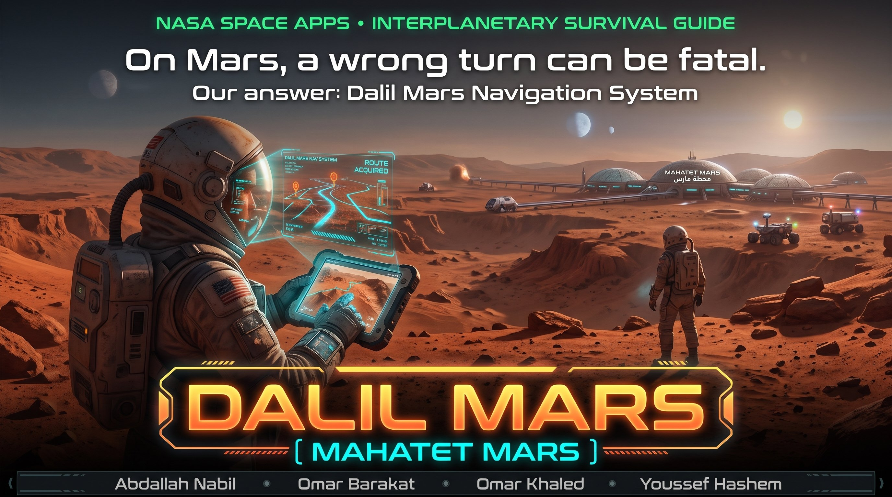
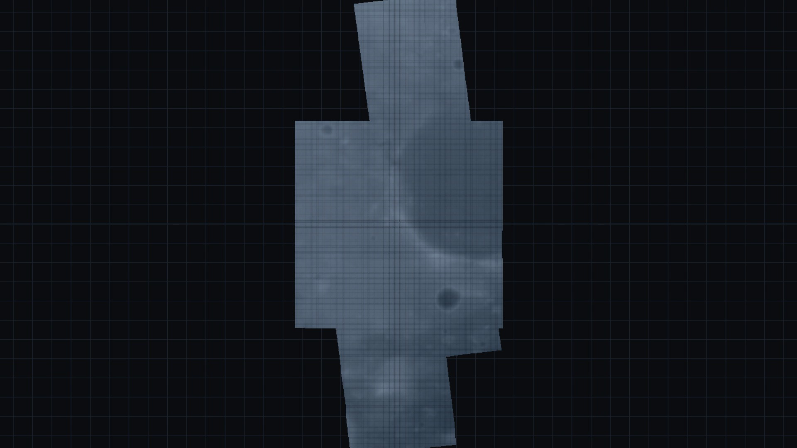
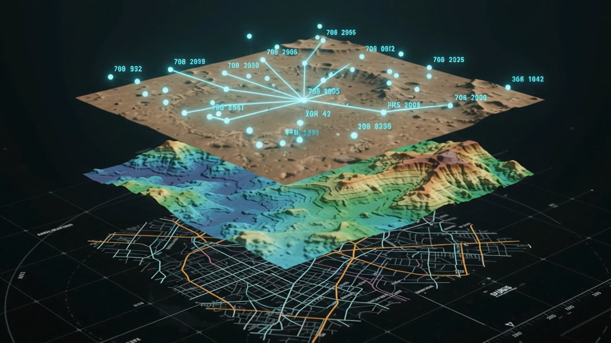
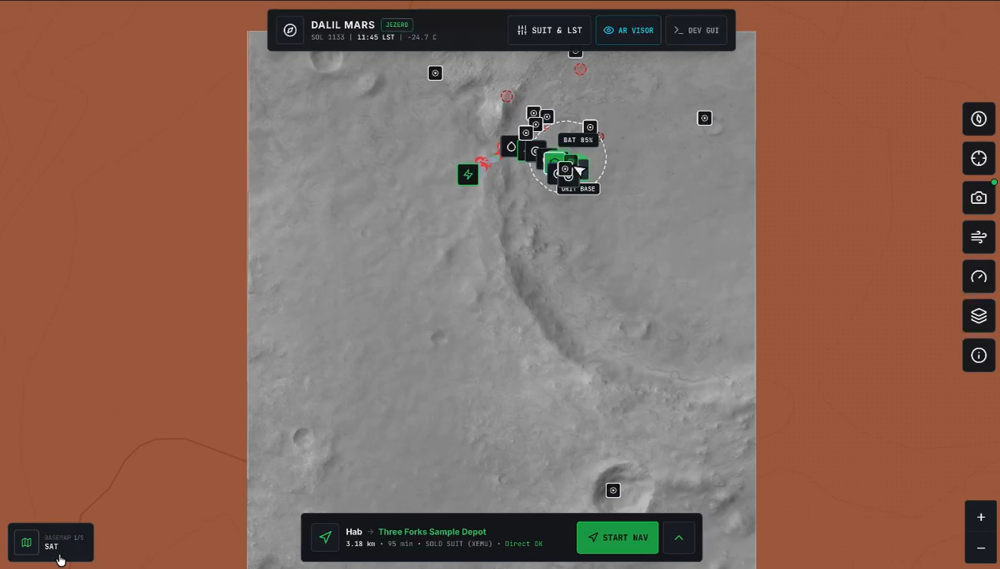
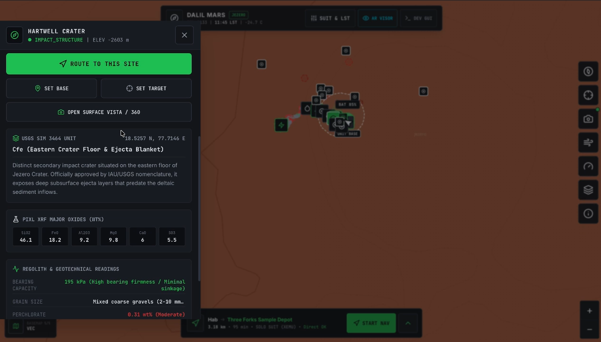
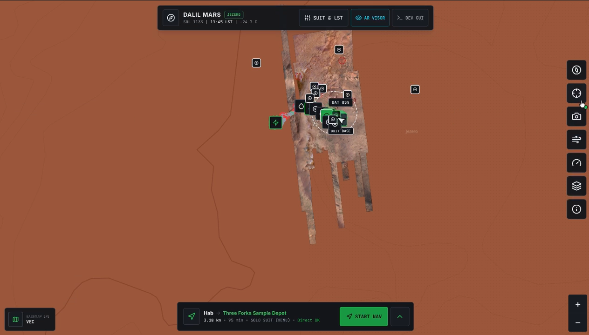
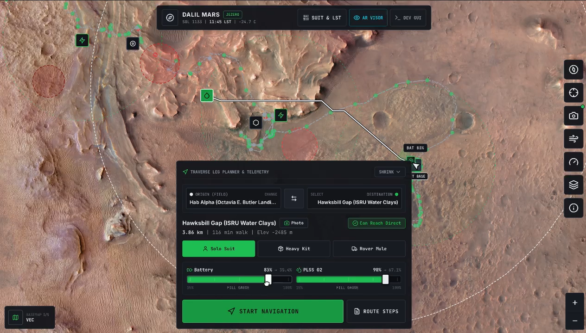
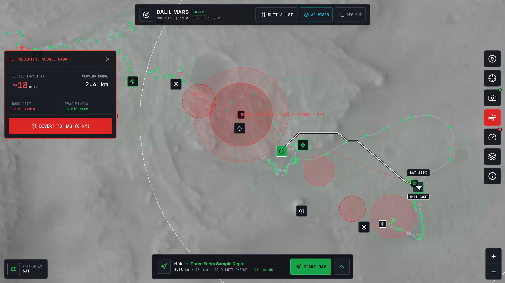
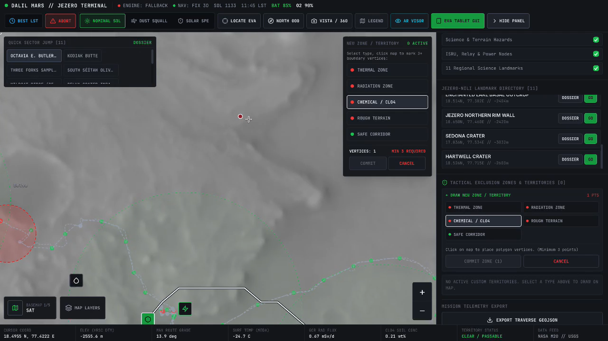
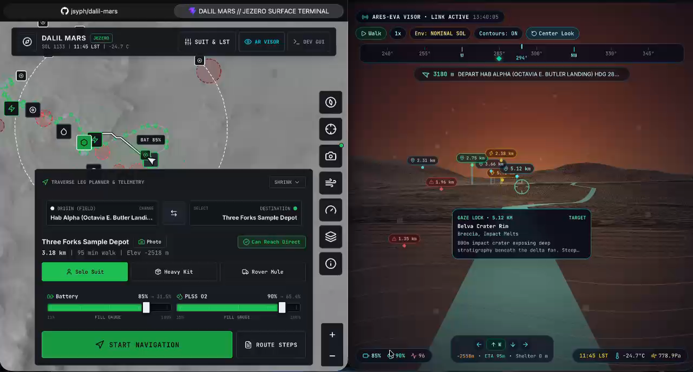

Why Jezero Crater?
A landing site with authentic planetary datasets to build upon.
Ancient River Delta
A former lake basin and a prime place to look for signs of past microbial life.
Orbit to Ground Data
USGS SIM 3464 geologic layers, ESA HRSC stereo elevation, and 708 ground-truth Perseverance waypoints.
Floor, Delta, and Rim
Real slopes, dunes, and boulder fields that an autonomous surface traverse must identify and safely avoid.

Perseverance Landing Site & Regional Geology
Orbital stereo imaging across Jezero Crater provides sub-meter resolution topographic and mineralogical data, linking 708 ground-truth Perseverance waypoints directly to regional elevation contours and USGS geologic strata.
From Data to 3D Terrain
A depth heat map becomes an interactive 3D terrain costmap.
6-Stage Ingestion Pipeline
Ingests multi-DTM stereo rasters at 20.2m resolution, computes Sobel gradient vectors, classifies cliff barriers, and snaps exploration waypoints.
Hierarchical All-Pairs Heuristics
Precomputed distance fields across 64-macro-cell blocks allow sub-second obstacle-aware trajectory planning across the entire crater.
Depth Heat Map to 3D Voxel Costmap
Raw 2D digital terrain elevation rasters are mapped into an interactive heightfield, scoring slope angle, roughness, and traversability limits for rover navigation.
2D Elevation Heat Map to 3D Terrain Model
The preprocessing pipeline transforms raw 2D digital terrain elevation rasters into an interactive 3D voxel heightfield. Each grid cell is cost-scored by slope angle, roughness, and traversability limits for rover navigation.

Astronaut Mode
Glove-friendly navigation with survival numbers up front.
Few, Large Controls
Oversized touch targets engineered for pressurized spacesuit gloves. Only what is needed to move and stay alive.
Battery & O₂ Settings
Continuous consumption monitoring. If battery reserves dip, recharge waypoints are automatically inserted into the route.
Abort Mission Scenario
Immediate calculation of egress corridors escaping sudden dust storms, solar flares, or rover hardware hazards back to Base Camp.
Field Traversal & Real-Time Egress
Astronaut Mode presents clean, high-contrast operational status directly on the rover dashboard. Traversable corridors, battery drain profiles, and abort paths are updated continuously during EVA surface operations.

01 // Multi-Layer View
Toggle seamlessly between satellite imagery, slope heat maps, and danger barrier overlays.

02 // Location Details & 360 Panorama
Visual verification of slopes, scarps, and boulder fields prior to sector entry.

03 // Current Location Lock
Real-time vehicle position, bearing heading, and route path history.

04 // Battery & O₂ Settings
Continuous consumption monitoring with automatic recharge waypoint insertion.

05 // Abort Mission Scenario
Immediate calculation of egress corridors escaping dust storms, solar flares, or any hazard.

06 // Mission Control Telemetry
Unified split telemetry linking real-time astronaut field status with ground control monitoring.
Scientist Mode
The same terrain map with far more information for scientific analysis.
Full Data Layers
Geology, elevation, slope, and rover telemetry in one unified tactical screen.
Flag a New Region
Pick an area to explore and add it to the map with custom survey polygons.
Astrobiology Sample Planning
Target high-priority sediment delta beds with calculated scientific payoff vs traverse risk.
Comprehensive Geological & Cartographic Layers
Scientist Mode transforms the surface navigation model into a scientific research workstation. Mission controllers can inspect orbital multispectral signatures, examine USGS SIM 3464 stratigraphy, and designate scientific targets with millimeter accuracy.

Visor AR HUD Display
The spatial visor HUD runs directly on our shared 3D terrain model.
One 3D Model
The single source of truth feeds both the workstation and the astronaut's heads-up display.
Hands-Free Wayfinding
Route corridors and terrain hazards stay anchored in the astronaut's field of view.
Real-Time Hazard Overlays
Dynamic detection of obstacles updates the safe corridor and elevation profile directly in visor sight.

Direct-to-Visor Holographic Projection
The heads-up visor HUD renders directly from the shared 3D terrain geometry. EVA astronauts see real-time safe corridors, slopes, and hazard boundaries projected stereoscopically over the Martian surface without looking down at a tablet.
What's Next
Built on Jezero, ready for any outer-space terrain.
Other Mars Sites
Swap in new elevation and geology data for any region, including Valles Marineris and Gale Crater.
Moon and Deep Space
The same pipeline can map Lunar South Pole topography and craters for Artemis surface missions.
Artemis and Mars Crews
A universal navigation terminal for future planetary surface operations. Reliable, data-driven, built for survival.